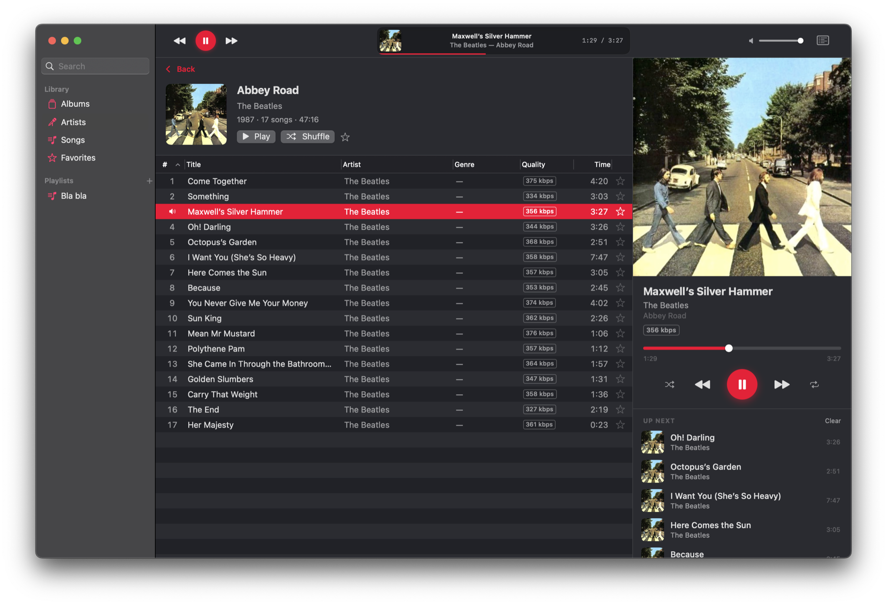

True gapless playback
Album transitions are seamless by construction — Abbey Road plays the way it was mastered.
For macOS 14+ · OpenSubsonic / Navidrome
The interaction design iTunes got right — a dense sortable track list, a column browser, Up Next, fast search — rebuilt as a modern, restrained Mac app. Streaming-only, audiophile-grade playback, no Electron in sight.
Free & open source · MIT · Zero third-party dependencies

Album transitions are seamless by construction — Abbey Road plays the way it was mastered.
Audirvana/Roon-style hardware rate switching, on by default. Your DAC runs at each track’s native rate; nothing gets resampled.
MP3, FLAC, AAC, WAV, AIFF and more decode as they stream — playback starts fast and memory stays flat.
Pick any output device. Unplug and replug a USB DAC mid-track and playback recovers — your system-default device is never touched.
Double-click or ⏎ to play, ⌥-double-click to queue next, multi-select, drag to playlists.
Genre → Artist → Album, just like you remember. Global search on ⌘F, quality badges with lossless-first sorting.
Create, rename, reorder, delete — server playlists stay fully in sync. Favorites everywhere, with a ★ column.
Menu-bar player, media keys, Control Center widget, Light/Dark, VoiceOver, state restoration. Sandboxed with a single entitlement.
Right-click a track or artist and Start Radio — a similar-songs mix from your server’s metadata agent, with sensible fallbacks when it has none. Artist pages carry bios and similar artists.
Shuffle Library queues a 500-song mix of everything. Shuffle Albums plays whole albums back-to-back in random order — gapless stays gapless — and honors your genre or decade filter.
Grab Sonicwave-0.1.2.zip from the latest release, unzip, drop it in /Applications. It opens right away — no security warnings.
Open Settings → Connection (⌘,), enter your server address and credentials, hit Test Connection.
Credentials go straight to the Keychain — your password never travels in a URL. Your whole library, one ⏎ away.
http://nas.local were silently blocked by macOS; local plain-HTTP is allowed, and non-local http:// fails with a clear message.